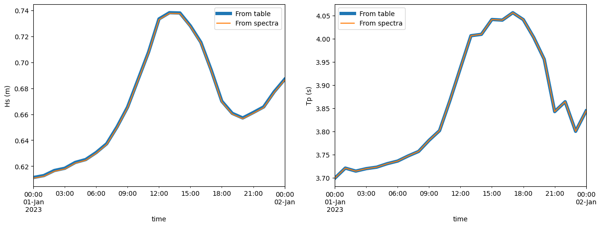
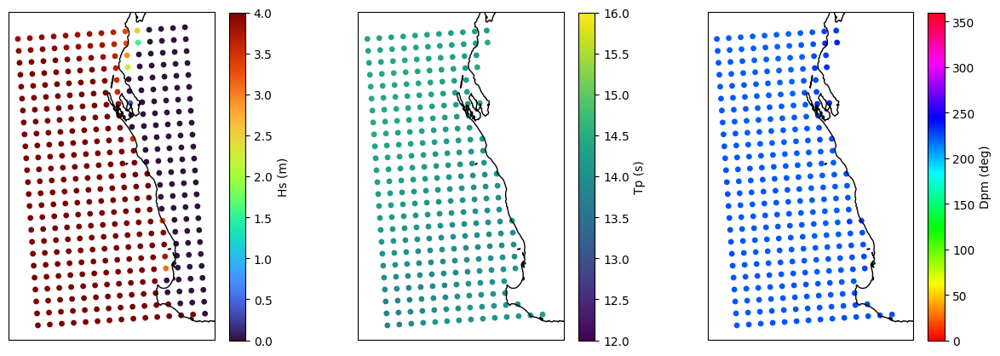
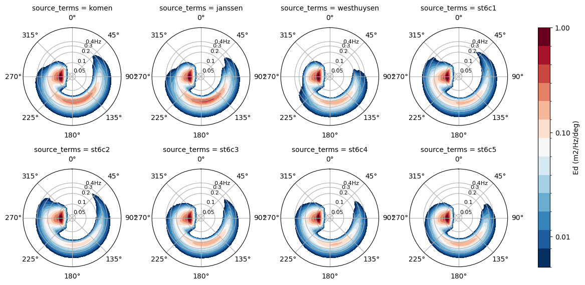

Demonstration notebooks# Thumbnails gallery# Basic demonstration Templates demonstration  SWAN declarative example  SWAN procedural example  SWAN sensitivity example Working demonstration Model components SWAN Physics Components SCHISM procedural example